八宝葫芦鸭
隋卞一做。整鸭剔骨后把腿翅塞回肚里，葱姜水浸泡去腥；八宝料切丁炒香拌米饭，填鸭肚七分满，签子缝合、绳子绑成葫芦形，焯水上色后蒸 66 分钟。
原视频：https://www.bilibili.com/video/BV1hj41197EL
食材
整鸭、糯米饭、鲍鱼 等 17 样
| 类别 | 用料 | 用量 |
|---|---|---|
| 主料 | 整鸭 | 适量 |
| 八宝馅 | 糯米饭 | 适量 |
| 八宝馅 | 鲍鱼 | 适量 |
| 八宝馅 | 海参 | 适量 |
| 八宝馅 | 鸡肉 | 适量 |
| 八宝馅 | 五花肉 | 适量 |
| 八宝馅 | 干香菇 | 适量 |
| 八宝馅 | 笋 | 适量 |
| 八宝馅 | 蹄筋 | 适量 |
| 八宝馅 | 鸡胗 | 适量 |
| 调料 | 葱姜 | 适量 |
| 调料 | 八角 | 适量 |
| 调料 | 生抽 | 适量 |
| 调料 | 料酒 | 适量 |
| 调料 | 油 | 适量 |
| 调料 | 味精 | 适量 |
| 调料 | 淀粉 | 适量 |
步骤
- 去掌翅剔骨：去掉鸭掌、鸭翅；用小刀小心剔掉整只鸭的骨头，鸭脖子一指处切断，注意千万不要把鸭皮弄破。
- 浸泡：将鸭腿、鸭翅塞回鸭肚里，不用绑；用葱姜水浸泡去腥增香。
- 炒八宝料：将准备好的八宝料切丁，大小一样；先煸炒猪肉，并放入其余馅料继续煸炒。
- 拌馅：加入鸡汤，味精调味融合，加入米饭搅拌均匀备用。
- 填馅：鸭子捞出擦干，将八宝料填充七分满。
- 造型：用签子缝合鸭子开口，固定鸭头，在鸭头和鸭翅附近用绳子绑出葫芦造型。
- 焯水上色：焯水，酱油上色，过油捞出；底油葱姜大料瓣，加少许鸡汤生抽。
- 蒸制：将汁儿浇在鸭子上放蒸箱蒸 66 分钟，至鸭肉熟透软烂。
- 勾芡浇汁：将汤汁入锅，做好勾芡，去掉绳子、签子，均匀浇盖即可。
讲解要点
难度：★★★★★（整鸭剔骨最考手上功夫，难点是剔骨不断皮、填馅不漏、绑出葫芦形）
为什么这么做
- 去掉鸭掌鸭翅：鸭掌、鸭翅的关节和皮连着，留着不好剔骨，也影响绑葫芦造型。
- 剔骨让刀贴着骨头走：摸着骨头一点点剔，里面肉碎点没关系，只要不把鸭皮捅破就行；皮一破后面灌馅就会漏。
- 腿骨先撅一下、摸到关节一捅：顺着关节脱出来，比硬切省力，也不容易戳破皮。
- 腿翅要塞回鸭肚里、不用绑：一加热肉自然收缩，塞进去的腿翅就固定住了，里面的馅也不会漏。
- 八宝馅没规定必须哪八样：五花肉、香菇、笋、鸡肉、鸡胗、蹄筋、海参、鲍鱼都行，关键是够八种、够新鲜、没有异味。
- 先煸五花肉出油再下其他料：借用猪肉的香味代替高汤，油也带出所有料的香；海参、鲍鱼最后放，因为已经熟了，放早了会化、会变老。
- 加鸡汤和糯米饭拌馅：汤把各种料的味道融合到一起，糯米饭吸掉多余的油。
- 只装七分满：后面焯水、加热还会收缩膨胀，装满就漏了。
- 焯水定型、抹酱油上色、过油见好就收：过油只是给皮上色，久了皮就老了。
- 大火滚，勾芡不亮，所以要小火勾芡：芡要薄而亮，浇在鸭身上显得精神；上桌前去绳去签即可。
容易翻车
- 剔骨时刀尖贴骨不贴皮，皮是最容易破的地方。
- 填馅一定只到七分满，装满了加热后馅就挤出来。
- 蒸的时间要够（66 分钟），鸭肉才熟透软烂；视频里蒸箱定时 16 分钟，应是口述或字幕笔误，按片尾卡为准。
- 勾芡时火一大、芡粉一多就不亮，芡要薄而亮。
原片尾卡
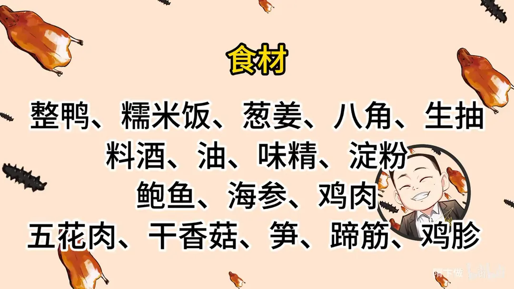
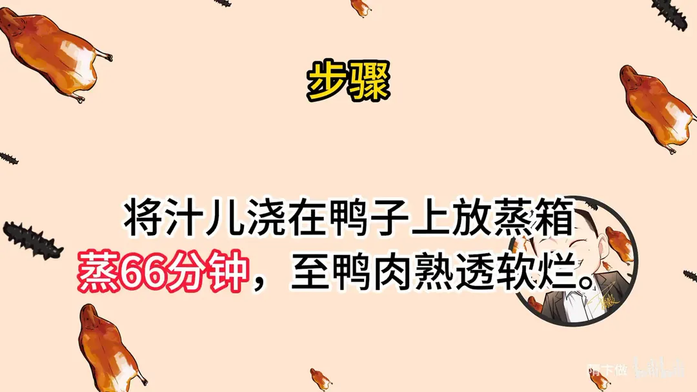
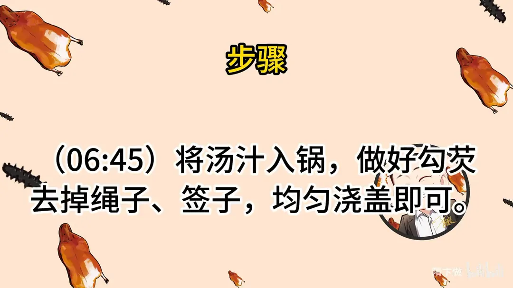
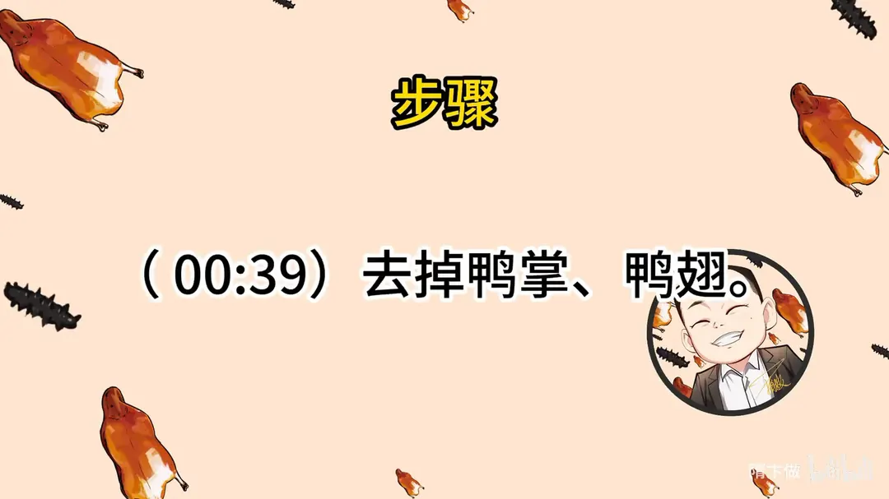
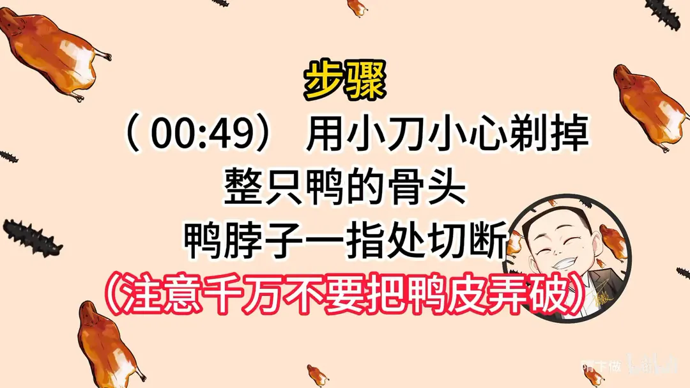
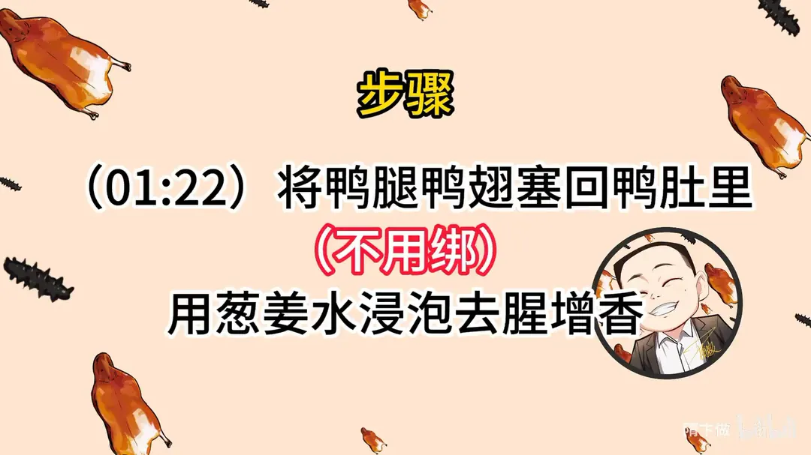
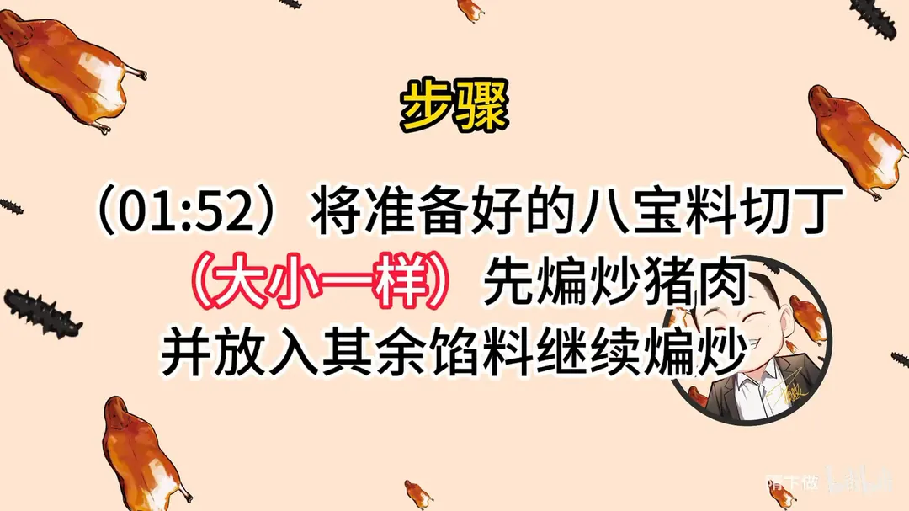
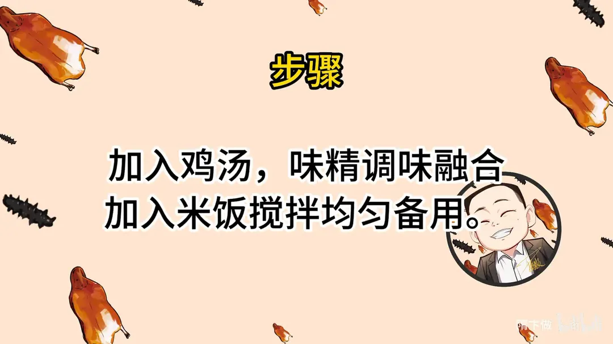
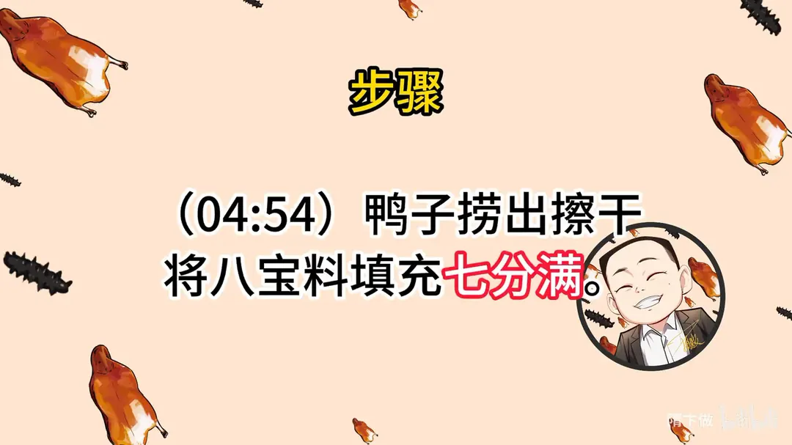
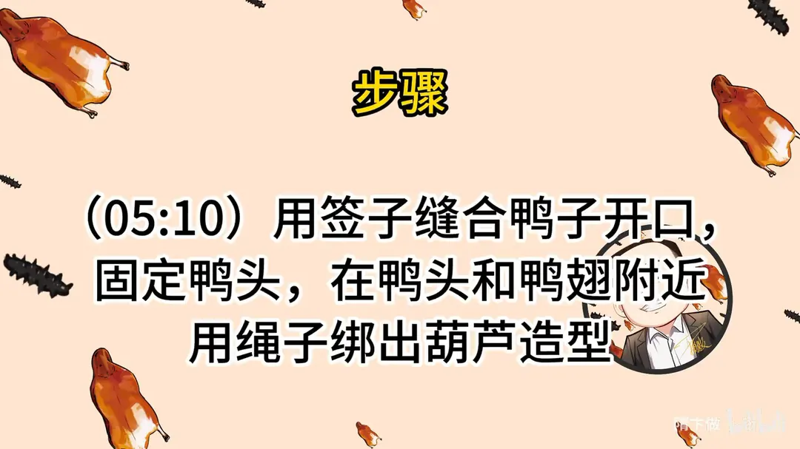
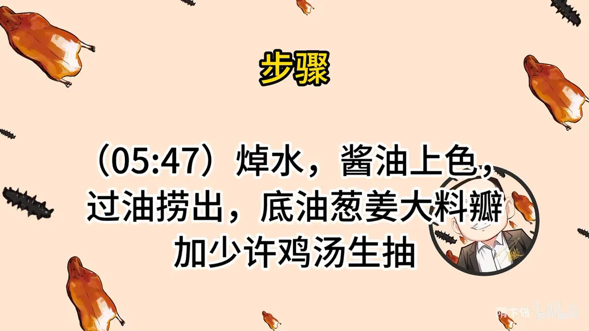
原片文案
AI 字幕校准稿
用整鸭脱骨，却只当容器，里边填八种馅料。今天教你们做淮扬名菜八宝葫芦鸭。
第一步就要给鸭子去骨，最传统的方法是从脖子下刀，把所有的骨头都给剔出来。但是现在你们买鸭子都会面临一个问题：只要你没有特殊要求，腿上肯定从肚子那下一刀，把里面所有的肚子掏干净。为了让你们在家就能学会，我在家里边也研究了一下腹开刀的鸭子，给您做成葫芦鸭子形状。这可是大名菜。
这个鸭掌要去掉，从这个关节，这刀就好连。然后把这鸭翅也要去掉。翻过来，先把鸭腿给他撅一下，手下去摸到关节，一捅就出来了。腿的另一条骨头，直到它贴着骨头一拉，千万要小心，别拉到皮，皮一破就不好切了。后背的大骨手扣一扣就行了，筋多的地方拿刀剌一下。从后边取得更简单，也适合你们在家里边做。等下面的骨头弄完之后，一揪这脖子就出来了。大家看一下啊，世界上最没骨气的鸭子。
然后把这个大腿都捅进去，桶子里面，不用绑，一加热自然它就收缩了，它里面的馅是不会漏的。好了，咱们拿葱姜水给它泡一下，加点料酒、来点生抽，目的是给它去腥、增香、入底味。
然后我们开始准备八宝料。八宝咱们家里随时都可以有，五花肉丁、香菇之类都可以放，从来没有规定过这八宝必须是什么，但是一定得够八种原料、够新鲜、没有异味，这是要求。这是我们准备的海参，海参切成丁，鲍鱼切成丁，其他的小料我们都处理完了，不管是什么东西，一定大小差不多。
准备好之后就要把它炒一下。锅里边加热水，海参倒进去，鲍鱼丁也过一下。锅里边烧干，加入干净油，烧热，猪肉倒进去，要多炒一会儿，把油脂都煸出来。我没有特别好的高汤，所以就要借助肉的香味。然后把葱姜倒进去，肉先把它煸出油来，用这油煸葱花，葱花煸香了，然后下香菇、笋丁、鸡肉、鸡胗、蹄筋，再煸，烹点生抽。鲍鱼和海参最后放，因为这两个刚才已经熟了，时间长了以后会很老，海参放太早了容易化。鸡汤来一点，白胡椒、味精调味，搁点汤的意思就是让所有的味道都融合到一起。好了，关火，里边加入蒸好的糯米饭，拌的时候也能把多余的油吸掉。
刚拌完的饭有点热，稍微晾一晾。把鸭子捞出来，拿干净纸把里面的水吸一下，吸干了之后往里面灌馅，灌七分满就差不多，不能灌得很满，一会焯水它还会缩。
然后开始缝合，多的一截就剪掉，编完之后翻一下是这个形状，拿钳子把这个头给它缝上，起到一个固定的作用，下边一样，绑好就是葫芦鸭子的形状。脖子前面可以再绑一下，因为下边有个骨头能勒得着。
鸭子放到锅里焯水，定型了，就给它捞出来。往上面抹点酱油上色，过一下油，见好就收，捞了。留底油，葱姜、大料瓣煸香了之后，加鸡汤、生抽，然后把这个汁浇在上面，放到蒸箱里面去蒸，蒸 66 分钟。
蒸这么长时间，摸着也不太烫手了。原汤倒进去，我们要打个芡，把里面的料都捞出来，上面多余的油也要撇一下，补一点色。烧开勾芡，火不能让大火滚，大火滚勾的芡不是很亮，快要开的时候就得关小火，这样就差不多了。鸭屁股切掉，把前面的绳子都剪了。你们看它那腿那里一加热，自然就收缩了，然后把签子拔了，浇上汁。
每吃一口都觉得像在犯罪。如果你们在外面吃，看见这个了，一定先吃里面的，外面鸭皮是最不值钱的，这里面放这么多料。这个已经是我给你们想出来在家最好做的了：本身这个腹开的整鸭坯子要皮，从脖颈下开小口去骨，骨头已经简单 50% 了；我们因为没有小刀，所以用大菜刀剔，你们在家用小刀的话，可能又能简单 50%。在家里剔鸭脖子没有什么规范的公式套路，就是慢慢来，只要不把鸭皮捅破了，里边肉碎点并不重要，边摸着骨头慢慢剔就可以了。我觉得大家在家可以练练这个菜，这菜是很装的一道菜，不管在什么饭局上，上来这么一道菜，鸭子太有料了。